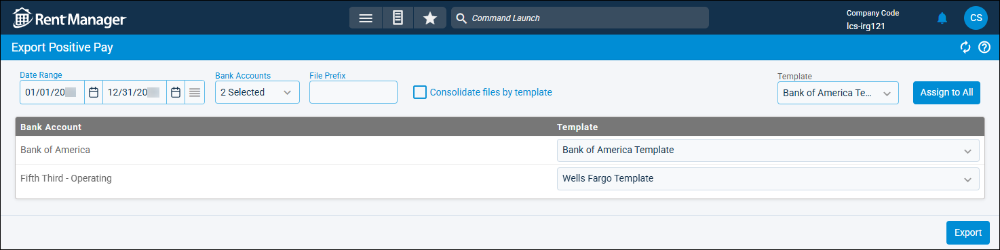

Source: https://rmxhelp.rentmanager.com/Topics/Express/Other/Export-Positive-Pay.htm
Export Positive Pay
The Export Positive Pay page exports check data to a file using the positive pay formats required by your bank. The positive pay formats file should then be sent to your bank so that they honor only the checks with information in the file to help deter fraud.
Before exporting, you need to have a positive pay format template created based on your bank's specific requirements. In addition, the template should be mapped to the bank account where you have a positive pay arrangement.
Related Privileges
| Group | Privilege | Column |
|---|---|---|
| Banks/Checks | Create Positive Pay Exports | Enabled |
For more information, refer to Control User Access.
Step 1: Configure Positive Pay Export
To configure positive pay formats on your computer, do the following:
-
Go to
 arrow_forward Accounting arrow_forward Banking arrow_forward Export Positive Pay.
arrow_forward Accounting arrow_forward Banking arrow_forward Export Positive Pay.
-
Enter the Date Range to examine check activity in Rent Manager.
-
In the Bank Accounts drop-down, select the desired bank(s) to include in the export.
Related Privileges
This field populates with only banks and credit cards to which you have access. Your access to banks and credit cards can be managed on the user's details page. For more information, refer to Limit Access to a Bank or Credit Card.
-
Enter a File Prefix that is added to the beginning of the exported file's name. The file name is generated from the File Prefix, Bank Account, and the date and time the export was run in mmddyyhhmm format. For example, if you enter WeeklyPosPay, the file is named similar to WeeklyPosPayChase Bank Operating0501250133.
-
To generate one file for multiple bank accounts that use the same positive pay template, check Consolidate files by template. This file contains all the information in individual exports, just combined in a single file. This option is useful if your bank accepts a single positive pay file for all accounts held at that bank. The export file uses the following naming convention: <File Prefix><Template name><Date stamp>.txt.
-
For each Bank Account that needs a positive pay format assigned, select an option from the Template column drop-down list. Alternatively, to assign a single positive pay format to all of the bank accounts listed, select an option from the Template field at the top and click Assign to All.
-
Click Export.
Step 2: Save Mappings and Export Summary
To save your mappings and export the summary, do the following:
-
On the Save Mappings pop-up, click Yes if you would like to make each of the format mappings the default positive pay template mapping for each bank. Otherwise, click No.
-
If any of the mapped positive pay format templates include an ASK value, which prompts for user input, the Additional Information pop-up displays. Enter the answer(s) in the Value field(s) in the proper formatting required by the bank.
-
On the Export Summary pop-up, click Yes if you would like to view a summary report of your export. Otherwise, click No.
A positive pay export file is generated for each bank account and saved to your computer.